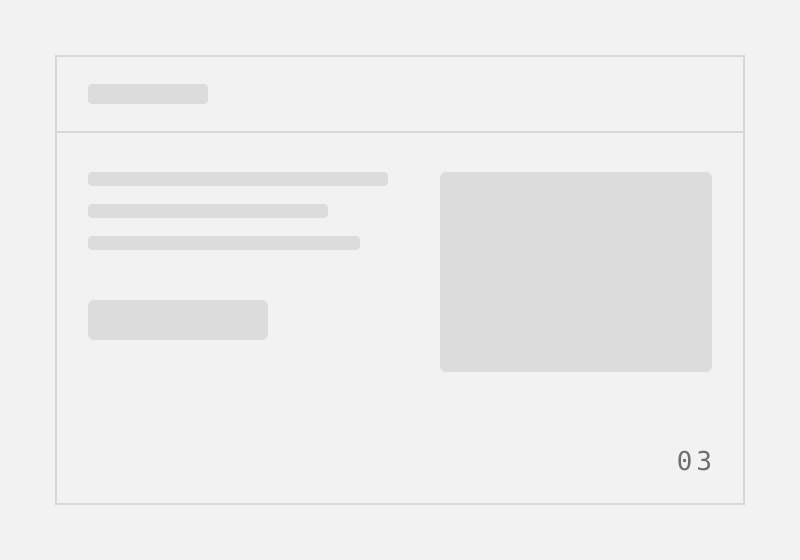

<meta name="viewport" content="width=device-width, initial-scale=1">
<title>Case study &mdash; template</title>
<link rel="preconnect" href="https://fonts.googleapis.com">
<link rel="preconnect" href="https://fonts.gstatic.com" crossorigin>
<link rel="stylesheet" href="https://fonts.googleapis.com/css2?family=Bricolage+Grotesque:opsz,wght@12..96,800&family=IBM+Plex+Mono:wght@400;700&family=IBM+Plex+Sans:wght@300;400&display=swap">
<link rel="stylesheet" href="rail.css">
<link rel="stylesheet" href="case-study-section.css">

<!-- Case study template -->
<!-- the shared rail: same component as the intro section, fixed to the window so it
     rides along the sideways track instead of scrolling off the end of it -->
<nav class="rail" aria-label="Section links">
  <div class="rail__main">
    <a class="rail__link" href="#ideas">Home</a>
    <span class="rail__rule" aria-hidden="true"></span>
    <a class="rail__link" href="#about">About me</a>
    <span class="rail__rule" aria-hidden="true"></span>
    <a class="rail__link" href="#contact">Contact</a>
  </div>
  <a class="rail__cv" href="#cv" aria-label="Download CV">
    <span class="rail__cv-label">CV</span>
    <svg class="rail__cv-icon" viewBox="0 0 16 16" width="15" height="15" fill="none"
         stroke="currentColor" stroke-width="1.6" stroke-linecap="round" stroke-linejoin="round"
         aria-hidden="true" focusable="false">
      <path d="M8 1.7v8.1"/><path d="M4.7 6.5 8 9.8l3.3-3.3"/>
      <path d="M2.2 12.2v1.3c0 .4.4.8.8.8h10c.4 0 .8-.4.8-.8v-1.3"/>
    </svg>
  </a>
</nav>

<article class="cs" role="region" aria-label="Case study presentation" aria-labelledby="cs-title" tabindex="0">

  <!-- ============ 1. the hook ============ -->
  <!-- one screen, one claim: the reason to keep scrolling -->
  <header class="cs__hook">
    <p class="cs__eyebrow">Case study &mdash; 01</p>

    <h1 class="cs__hook-line" id="cs-title">Checkout lost four of every five carts. Six weeks later it lost one.</h1>

    <p class="cs__hook-sub">One sentence of context: the product, the surface, and the stake. Keep it to a
      single breath &mdash; the detail belongs further down.</p>

    <!-- the facts a recruiter scans for before reading a word of prose -->
    <dl class="cs__meta">
      <div class="cs__meta-pair">
        <dt class="cs__meta-key">Role</dt>
        <dd class="cs__meta-val">Product designer</dd>
      </div>
      <div class="cs__meta-pair">
        <dt class="cs__meta-key">Year</dt>
        <dd class="cs__meta-val">2025</dd>
      </div>
      <div class="cs__meta-pair">
        <dt class="cs__meta-key">Duration</dt>
        <dd class="cs__meta-val">6 weeks</dd>
      </div>
      <div class="cs__meta-pair">
        <dt class="cs__meta-key">Team</dt>
        <dd class="cs__meta-val">1 designer, 2 engineers, 1 PM</dd>
      </div>
    </dl>

    <p class="cs__scroll" aria-hidden="true">
      <span class="cs__scroll-label">Scroll</span>
      <span class="cs__scroll-rule"></span>
      <span class="cs__scroll-arrow">&rarr;</span>
    </p>
  </header>

  <!-- ============ 2. the client ============ -->
  <section class="cs__block" aria-labelledby="cs-client">
    <h2 class="cs__kicker" id="cs-client">The client</h2>
    <div class="cs__block-body">
      <p class="cs__lede"><a class="cs__link" href="#"><span class="cs__link-label">Client name</span></a>
        sells what they sell to who buys it.</p>
      <p class="cs__prose">Two or three sentences on the business as it stood when the work started: size,
        stage, how they made money, and what they had already tried. Written for someone who has never heard
        of them.</p>

      <!-- the shape of the business, in the same mono voice as the hook facts -->
      <dl class="cs__facts">
        <div class="cs__meta-pair">
          <dt class="cs__meta-key">Industry</dt>
          <dd class="cs__meta-val">Direct-to-consumer retail</dd>
        </div>
        <div class="cs__meta-pair">
          <dt class="cs__meta-key">Stage</dt>
          <dd class="cs__meta-val">Series A</dd>
        </div>
        <div class="cs__meta-pair">
          <dt class="cs__meta-key">Surface</dt>
          <dd class="cs__meta-val">Responsive web</dd>
        </div>
      </dl>
    </div>
  </section>

  <!-- ============ 3. the problem ============ -->
  <section class="cs__block cs__block--problem" aria-labelledby="cs-problem">
    <h2 class="cs__kicker" id="cs-problem">The problem</h2>
    <div class="cs__block-body">
      <p class="cs__statement">State the problem as the client stated it, in their words, before you
        reframed it.</p>
      <p class="cs__prose">Then the paragraph that says what was actually going on underneath &mdash; the gap
        between the brief you were handed and the problem you found. This is where a reader decides whether you
        think or just execute.</p>

      <!-- what the problem looked like from the outside, one line each -->
      <ul class="cs__symptoms">
        <li class="cs__symptom">
          <span class="cs__symptom-key">Signal</span>
          <span class="cs__symptom-val">The number, quote, or ticket volume that made it undeniable.</span>
        </li>
        <li class="cs__symptom">
          <span class="cs__symptom-key">Constraint</span>
          <span class="cs__symptom-val">The thing you could not change: budget, stack, deadline, brand.</span>
        </li>
        <li class="cs__symptom">
          <span class="cs__symptom-key">Unknown</span>
          <span class="cs__symptom-val">The question nobody could answer at the start.</span>
        </li>
      </ul>
    </div>
  </section>

  <!-- ============ 4. the timeline ============ -->
  <!-- each step is its own hover target; the artwork arrives from the right without moving the column -->
  <section class="cs__flow" aria-labelledby="cs-flow">
    <div class="cs__flow-header">
      <h2 class="cs__kicker" id="cs-flow">How it got solved</h2>
      <span class="cs__flow-rule" aria-hidden="true"></span>
      <p class="cs__flow-hint">Hover a step</p>
    </div>

    <ol class="cs__steps">
      <li class="cs__step is-active" tabindex="0" aria-describedby="cs-shot-1">
        <span class="cs__step-num">01</span>
        <div class="cs__step-body">
          <h3 class="cs__step-title">Named the real question</h3>
          <p class="cs__step-text">What you did, in two sentences, and what it changed about the next
            step. Verbs, not nouns.</p>
          <p class="cs__step-tags">Stakeholder interviews &middot; Analytics review</p>
        </div>
        <figure class="cs__shot" id="cs-shot-1" role="tooltip">
          
          <figcaption class="cs__shot-cap">Initial stakeholder alignment and friction mapping</figcaption>
        </figure>
      </li>

      <li class="cs__step" tabindex="0" aria-describedby="cs-shot-2">
        <span class="cs__step-num">02</span>
        <div class="cs__step-body">
          <h3 class="cs__step-title">Went and watched people fail</h3>
          <p class="cs__step-text">What you did, in two sentences, and what it changed about the next
            step. Verbs, not nouns.</p>
          <p class="cs__step-tags">Moderated testing &middot; Session replay</p>
        </div>
        <figure class="cs__shot" id="cs-shot-2" role="tooltip">
          
          <figcaption class="cs__shot-cap">User session recording audit and drop-off points</figcaption>
        </figure>
      </li>

      <li class="cs__step" tabindex="0" aria-describedby="cs-shot-3">
        <span class="cs__step-num">03</span>
        <div class="cs__step-body">
          <h3 class="cs__step-title">Drew the cheapest version that could be wrong</h3>
          <p class="cs__step-text">What you did, in two sentences, and what it changed about the next
            step. Verbs, not nouns.</p>
          <p class="cs__step-tags">Flows &middot; Low-fidelity wireframes</p>
        </div>
        <figure class="cs__shot" id="cs-shot-3" role="tooltip">
          
          <figcaption class="cs__shot-cap">Checkout branch logic and step consolidation</figcaption>
        </figure>
      </li>

      <li class="cs__step" tabindex="0" aria-describedby="cs-shot-4">
        <span class="cs__step-num">04</span>
        <div class="cs__step-body">
          <h3 class="cs__step-title">Built it properly once it stopped being wrong</h3>
          <p class="cs__step-text">What you did, in two sentences, and what it changed about the next
            step. Verbs, not nouns.</p>
          <p class="cs__step-tags">UI design &middot; Design system</p>
        </div>
        <figure class="cs__shot" id="cs-shot-4" role="tooltip">
          
          <figcaption class="cs__shot-cap">Componentized checkout sheet and validation states</figcaption>
        </figure>
      </li>

      <li class="cs__step" tabindex="0" aria-describedby="cs-shot-5">
        <span class="cs__step-num">05</span>
        <div class="cs__step-body">
          <h3 class="cs__step-title">Shipped it behind a flag and watched the number move</h3>
          <p class="cs__step-text">What you did, in two sentences, and what it changed about the next
            step. Verbs, not nouns.</p>
          <p class="cs__step-tags">Handoff &middot; A/B test</p>
        </div>
        <figure class="cs__shot" id="cs-shot-5" role="tooltip">
          
          <figcaption class="cs__shot-cap">Cohort conversion split test results</figcaption>
        </figure>
      </li>
    </ol>
  </section>

  <!-- ============ 5. the impact ============ -->
  <section class="cs__block cs__block--impact" aria-labelledby="cs-impact">
    <h2 class="cs__kicker" id="cs-impact">The impact</h2>
    <div class="cs__block-body">
      <p class="cs__statement">Cart completion rose from 21% to 78% within six weeks of rollout.</p>
      
      <dl class="cs__metrics">
        <div class="cs__metric">
          <dt class="cs__metric-num">+57%</dt>
          <dd class="cs__metric-label">Checkout conversion</dd>
        </div>
        <div class="cs__metric">
          <dt class="cs__metric-num">&minus;42s</dt>
          <dd class="cs__metric-label">Time to complete</dd>
        </div>
        <div class="cs__metric">
          <dt class="cs__metric-num">0</dt>
          <dd class="cs__metric-label">Drop-off support tickets</dd>
        </div>
      </dl>

      <p class="cs__prose">Two to three sentences on the business outcome, the long-term impact on the team,
        and what this project taught you about product design under real constraints.</p>
    </div>
  </section>

  <!-- ============ 6. next project ============ -->
  <section class="cs__next" aria-labelledby="cs-next">
    <p class="cs__eyebrow" id="cs-next">Next case study</p>
    <a class="cs__next-link" href="#">
      <span class="cs__next-title" data-multiline>Quantum chemistry startup website</span>
      <span class="cs__next-arrow" aria-hidden="true">&rarr;</span>
    </a>
  </section>

</article>

<script>
(function(){
  var page = document.querySelector('.cs');
  if(!page) return;

  /* a trackpad swipe already arrives as deltaX and is left alone; a mouse wheel only
     ever reports deltaY, so on the horizontal layout it has to be turned by hand.
     below the breakpoint the page stacks and scrolls down again -- the guard on
     scrollWidth is what tells the two layouts apart, so it needs no media query. */
  page.addEventListener('wheel', function(e){
    if(page.scrollWidth <= page.clientWidth) return;
    if(Math.abs(e.deltaX) > Math.abs(e.deltaY)) return;
    e.preventDefault();
    page.scrollLeft += e.deltaY;
  }, {passive: false});

  /* active step tracking: keeps the artwork populated on desktop */
  var steps = Array.prototype.slice.call(document.querySelectorAll('.cs__step'));
  steps.forEach(function(step){
    function activate(){
      steps.forEach(function(s){ s.classList.remove('is-active'); });
      step.classList.add('is-active');
    }
    step.addEventListener('mouseenter', activate);
    step.addEventListener('focusin', activate);
  });

  /* keyboard arrow horizontal scrolling when the container is focused */
  page.addEventListener('keydown', function(e){
    if(page.scrollWidth <= page.clientWidth) return;
    if(e.key === 'ArrowRight' || e.key === 'PageDown'){
      page.scrollBy({left: 320, behavior: 'smooth'});
    } else if(e.key === 'ArrowLeft' || e.key === 'PageUp'){
      page.scrollBy({left: -320, behavior: 'smooth'});
    }
  });

  /* multiline staggered highlight: splits wrapped text into rows with incremental transition delays */
  function splitMultiline(el){
    if(!el) return;
    if(!el._rawText){
      el._rawText = el.textContent.trim();
    }
    var words = el._rawText.split(/\s+/);
    if(words.length <= 1) return;

    el.innerHTML = words.map(function(w){
      return '<span class="cs__word-measure" style="display:inline">' + w + '</span>';
    }).join(' ');

    var spans = el.querySelectorAll('.cs__word-measure');
    var lines = [];
    var currentLine = [];
    var lastTop = null;

    for(var i = 0; i < spans.length; i++){
      var top = Math.round(spans[i].offsetTop);
      if(lastTop === null || Math.abs(top - lastTop) < 6){
        currentLine.push(words[i]);
      } else {
        lines.push(currentLine.join(' '));
        currentLine = [words[i]];
      }
      lastTop = top;
    }
    if(currentLine.length){
      lines.push(currentLine.join(' '));
    }

    el.innerHTML = lines.map(function(line, idx){
      var delay = (idx * 0.22).toFixed(2);
      return '<span class="cs__row" style="--row-idx:' + idx + ';--d:' + delay + 's">' + line + '</span>';
    }).join(' ');
  }

  var multilineEls = Array.prototype.slice.call(document.querySelectorAll('[data-multiline]'));
  function refreshMultilines(){
    multilineEls.forEach(splitMultiline);
  }
  refreshMultilines();
  if(document.fonts && document.fonts.ready){
    document.fonts.ready.then(refreshMultilines);
  }
  var resizeTimer;
  window.addEventListener('resize', function(){
    clearTimeout(resizeTimer);
    resizeTimer = setTimeout(refreshMultilines, 80);
  });
})();
</script>
